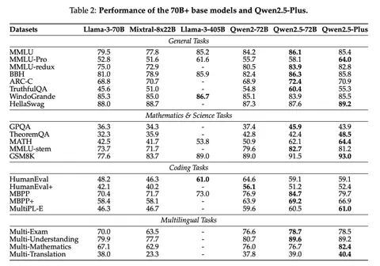

Создатели линейки языковых моделей Qwen2.5 представили технический отчёт. Вот что мы из него узнали.
Претрейн
На претрейне использовали датасет объёмом 18 триллионов токенов против 7 триллионов у Qwen 2. В частности, были данные, применявшиеся для обучения Qwen2.5-Math и Qwen2.5-Coder, что позволило улучшить результаты модели в вопросах, связанных с математикой и программированием. Также применяли синтетические данные, сгенерированные Qwen2. Scaling laws использовали для предсказания оптимальных гиперпараметров — например, для learning rate или вычисления размера батча.
Во время первой фазы претрейна длина контекста составляла 4096 токенов, а на второй и финальной — 32 768 токенов для всех моделей семейства, кроме Qwen2.5-Turbo. В её случае претрейн проходил в четыре этапа, начинаясь с 32 768 токенов и заканчивая 262 144 токенами. В каждой фазе претрейна Qwen2.5-Turbo максимального значения достигали только 40% данных, а остальные были короче. По словам авторов, это позволило модели плавно адаптироваться к новой длине контекста.
Благодаря стратегиям YaRN и Dual Chunk Attention удалось увеличить максимальную длину обрабатываемой на инференсе последовательности в четыре раза: до миллиона токенов у Qwen2.5-Turbo и до 131 072 токенов у других версий.
Алаймент
SFT-датасет состоял из более чем миллиона примеров. Длина выхода Qwen2.5 — 8192 токена, в то время как обычно она составляет менее 2000. Улучшения удалось добиться благодаря наборам данных для длинных ответов. Разработчики использовали back-translation, чтобы генерировать запросы на основе данных для предварительного обучения, ограничивали длину выхода и отфильтровывали низкокачественные пары с помощью Qwen2.
Для задач, связанных с математикой, использовали CoT-данные из Qwen2.5-Math. Кроме того, применяли rejection sampling вместе с размеченными данными и моделью награды для пошагового рассуждения. Что касается генерации кода, то здесь было несколько агентов и пары инструкций на примерно 40 языках программирования.
В части instruction following модели генерировали инструкции, проверочные коды и юнит-тесты для перекрёстной проверки. Это позволило LLM лучше следовать промптам. А благодаря внедрению цепочек рассуждений в ответы, Qwen2.5 стала лучше извлекать информацию из структурированных данных — например, таблиц.
Использовали также модель перевода инструкций с высокоресурсных на низкоресурсные языки. Каждый полученный ответ проходил оценку на семантическое соответствие оригиналу, что позволило сохранить логическую структуру и стилистику текста.
Разработчики создали сотни системных промптов, чтобы обеспечить согласованность между ними и диалогами. Для оценки качества ответов применяли несколько методов автоматической аннотации, включая специализированную модель-критика и систему коллективной оценки с участием нескольких агентов. Сохраняли только те ответы, которые все системы оценки посчитали безупречными.
На этапе DPO в качестве позитивных примеров использовали хорошие ответы с SFT. Те же, которые не прошли проверку на SFT, стали негативными примерами.
Для создания датасета задействовали как автоматические, так и ручные методы оценки. В итоге получился набор данных из 150 тысяч пар. Qwen2.5 обучалась на нём в течение одной эпохи с применением Online Merging Optimizer c learning rate 7 × 10⁻⁷.
Reward-модель тренировали на двух наборах данных: общедоступном и проприетарном, содержащем запросы со сложной структурой. Ответы генерировались с чекпоинтов Qwen-моделей, прошедших файнтюнинг разными методами (SFT, DPO, RL), и при разных температурах. В качестве алгоритма для онлайн RL использовали Group Relative Policy Optimization (GRPO). Набор запросов для обучения reward-модели был идентичен тому, что применялся на этапе обучения с подкреплением. Для каждого запроса отбирали по 8 ответов.
Душный NLP
